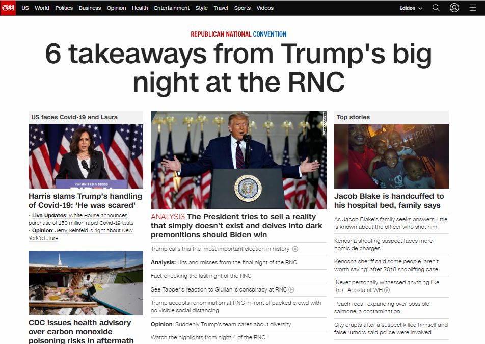
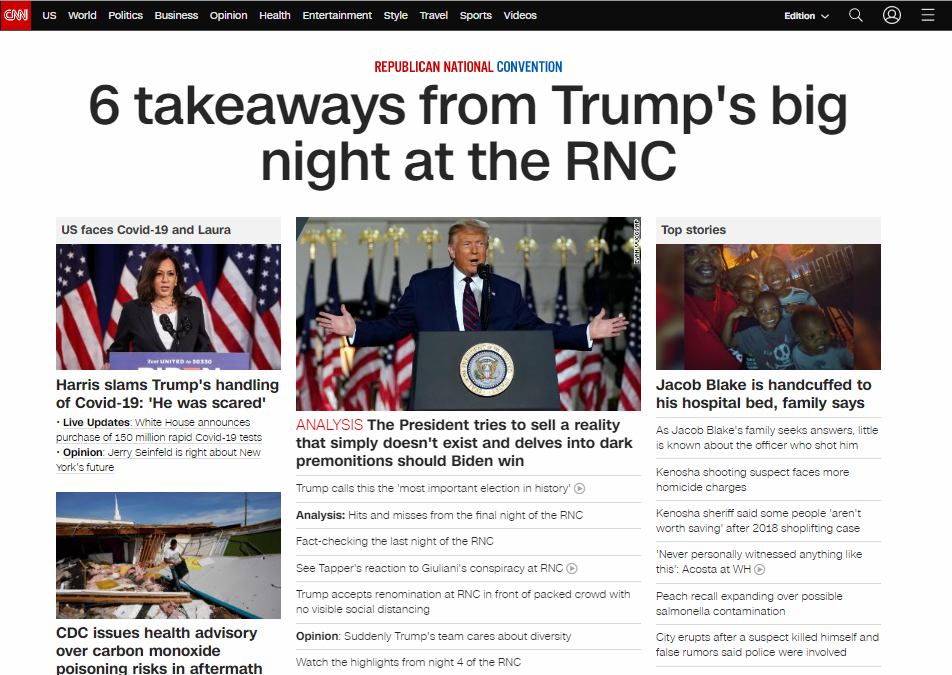
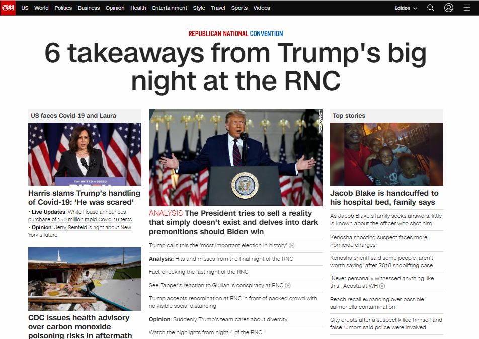

O principal "problema" do site no começo era sua estilização, porém, para a época era o melhor que tinha da tecnologia

Como podemos ver as imagens a cima, a aplicação do CSS ficou mais "avançada". Tendo uma ótima harmonia visual, com as cores, organização e também a barra de login.
 
